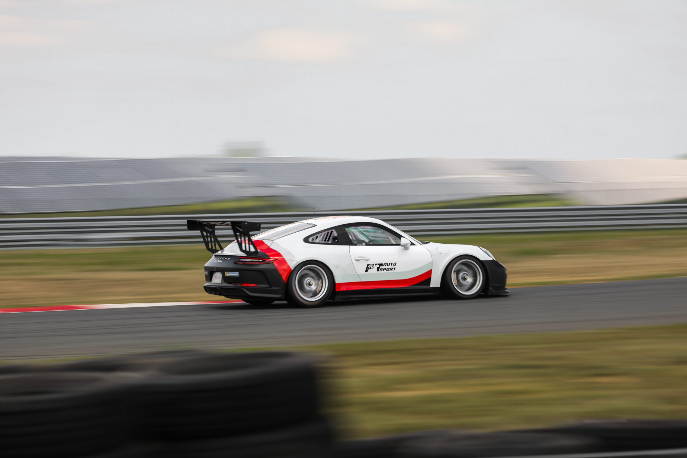

Информация об Автоспорте
Автоспорт — это вид спортивной деятельности, связанный с организованными соревнованиями на автомобилях или других транспортных средствах. Этот вид спорта включает разнообразные дисциплины, такие как гонки, ралли, кольцевые гонки, ралли-рейды и дрифтинг. Автоспорт сочетает в себе навыки вождения, техническую подготовку автомобилей и стратегическое мышление, создавая захватывающий опыт для участников и зрителей.
Вот основные аспекты автоспорта:
Виды дисциплин:
Автоспорт включает разнообразные дисциплины, каждая из которых имеет свои особенности. Главные дисциплины включают формульные гонки, туристические гонки, ралли, кольцевые гонки, ралли-рейды, дрифтинг и многие другие.
Гонки на кольцевых трассах:
Это гонки на специально созданных трассах, где автомобили соревнуются в круговых заездах. Формула 1 и другие чемпионаты кольцевых гонок пользуются огромной популярностью.
Ралли:
Ралли включает гонки на открытых дорогах и тропах. Гонщики проезжают по специально выбранным маршрутам, где они сталкиваются с разнообразными условиями дороги и погоды.
Ралли-рейды:
Это длительные гонки на большие расстояния через разнообразные территории, включая пустыни, джунгли и горные участки. Примером таких соревнований является "Дакар".
Дрифтинг:
В этой дисциплине акцент делается на контролируемом скольжении задних колес автомобиля вокруг поворотов. Дрифтинг выделяется своим спектакульным характером.
Техническая подготовка:
Транспортные средства, используемые в автоспорте, часто подвергаются специальной модификации и настройке для повышения производительности и безопасности.
Стратегия и тактика:
Автогонки требуют тактического мышления со стороны гонщиков и команд. Решения о том, когда adel пройти пит-стоп, как распределить усилия на разных участках гонки и т.д., играют ключевую роль в итоговом результате.
Безопасность:
Безопасность является приоритетом в автоспорте. Гонщики носят специальные защитные снаряжение, а трассы оборудованы барьерами и другими мерами безопасности.
Профессиональные лиги:
Существует множество профессиональных автомобильных лиг и чемпионатов, включая Формулу 1, Мировое раллийное чемпионат, Инди-кольцевые гонки и многие другие.
Зрелищность:
Автоспорт также привлекателен благодаря зрелищности, скорости и динамике, что делает его популярным как среди участников, так и среди зрителей.
Автоспорт — это динамичный и адреналин наполненный вид спорта, который объединяет в себ
советы

Стать гонщиком — это интересный, но требующий усилий путь. Вот некоторые шаги, которые помогут вам начать свой путь к становлению гонщиком:
Начните с картоинга:
Картоинг — это небольшие гоночные автомобили на низкоскоростных трассах. Это отличный способ начать свою гоночную карьеру и овладеть основами техники вождения.
Изучите автомобиль:
Ознакомьтесь с конструкцией автомобилей, их характеристиками и техническими аспектами. Понимание работы машины поможет вам стать более эффективным гонщиком.
Получите лицензию:
В зависимости от вашей страны, вы можете потребоваться получение специальной лицензии для участия в официальных гоночных соревнованиях.
Тренировки:
Участвуйте в тренировках и соревнованиях на местных гоночных трассах и картоинговых площадках. Это позволит вам набраться опыта и улучшить навыки вождения.
Обучение технике вождения:
Сотрудничайте с опытными инструкторами и тренерами, которые помогут вам развивать технические навыки вождения, такие как владение рулем, ускорение, торможение и управление автомобилем на высоких скоростях.
Физическая подготовка:
Гонки требуют хорошей физической формы. Работайте над выносливостью, силой и реакцией. Занимайтесь кардиотренировками, физическими упражнениями и координационными тренировками.
Профессиональные гоночные школы:
Рассмотрите возможность посещения профессиональных гоночных школ, где вы сможете получить интенсивное обучение технике вождения и стратегиям гонок.
Участие в аматорских гонках:
Примите участие в аматорских гоночных соревнованиях. Это позволит вам набраться опыта и понять, как устроены официальные гонки.
Выбор дисциплины:
Определитесь с дисциплиной, которая вам наиболее интересна: кольцевые гонки, ралли, дрифтинг и другие. Каждая дисциплина имеет свои особенности и требует разных навыков.
Спонсорство и поддержка:
Гонки могут быть дорогостоящим занятием. Рассмотрите возможность привлечения спонсоров или финансовой поддержки.
Профессиональные лиги:
Если ваша цель — стать профессиональным гонщиком, изучите возможности участия в профессиональных гоночных лигах и чемпионатах.
Развитие личности:
Развивайтесь как личность, разрабатывайте дисциплину, концентрацию и психологическую устойчивость. Гонки требуют не только физической, но и ментальной подготовки.
Учеба и опыт:
Продолжайте учиться и улучшать свои навыки. Посещайте семинары, учебные сессии и изучайте опыт опытных гонщиков.
Наставничество:
Общение с опытными гонщиками и получение советов и наставничества может значительно ускорить ваш процесс обучения.
Путь к становлению гонщиком требует упорной работы, стремления к совершенству и настоящей страсти к автоспорту.